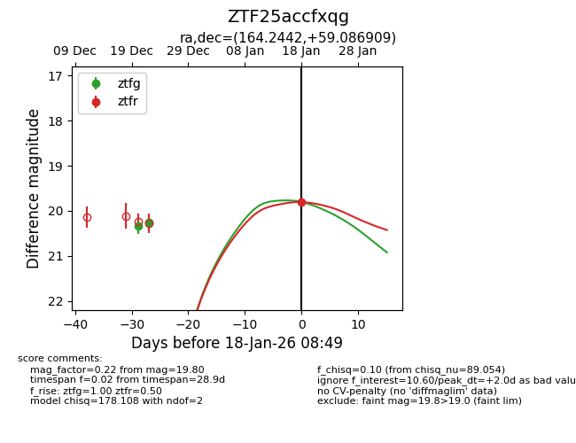
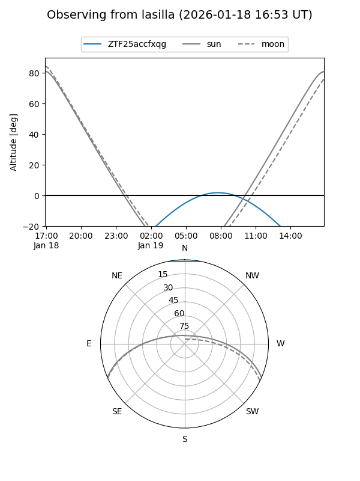
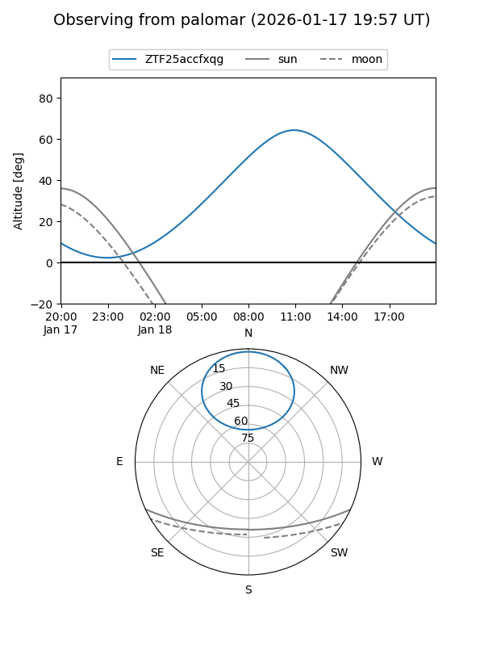
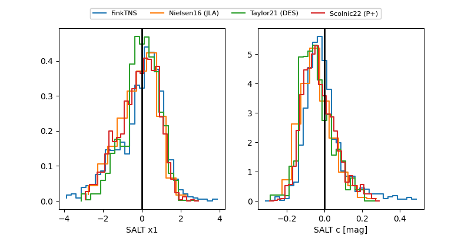

ZTF25accfxqg
Target ZTF25accfxqg at 2026-01-18 08:50
Aliases and brokers:
FINK: link
Lasair: link
ALeRCE: link
alt names
ZTF25accfxqg (ztf,fink_ztf)
Coordinates:
equatorial (ra, dec) = 164.2442,+59.08691
equatorial (HMS+DMS) = 10:56:58.60,+59:05:12.87
galactic (l, b) = (146.7294,+52.42757)
Flags:
Photometry:
last ztfg=20.27, ztfr=19.80
2 ztfg, 1 ztfr detections
Lightcurve

Visibility


Additional plots
